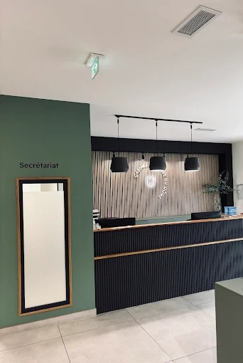

Consultation & soins préventifs
Bilans bucco-dentaires complets, détartrages et dépistage précoce pour préserver durablement la santé de votre sourire.
Vérification des horaires…
Prendre Rendez-vousUne équipe attentionnée, réactive et spécialisée dans la prise en charge personnalisée au 10 Rond-point Claudie d'Arcy.

Bienvenue au Cabinet Dentaire du Dôme, situé au 10 rond-point Claudie d'Arcy (Marseille 4e), en plein cœur d'un Pôle de Santé. Notre équipe de 5 chirurgiens-dentistes omnipraticiens accueille adultes et enfants dans un cadre moderne et bienveillant.
Une équipe complète pour répondre à tous vos besoins bucco-dentaires, du soin courant au traitement plus spécialisé.
Un accueil pensé pour toute la famille, avec une approche adaptée à chaque âge et à chaque niveau d'appréhension.
Un emplacement central à Marseille 4e, facilement accessible, au sein d'un pôle regroupant plusieurs professionnels de santé.
Des soins adaptés à chaque étape, dans un cadre pensé pour votre confort.
Bilans bucco-dentaires complets, détartrages et dépistage précoce pour préserver durablement la santé de votre sourire.
Douleur, traumatisme, abcès : une prise en charge rapide en cabinet, avec des créneaux réservés chaque jour aux urgences.
Blanchiment, facettes et alignement discret pour retrouver un sourire naturel qui vous ressemble.
Traitement des gencives et suivi personnalisé sur le long terme pour stabiliser durablement votre santé parodontale.
Correction de l'alignement dentaire à tout âge, avec des solutions discrètes adaptées aux enfants comme aux adultes.
Remplacement de dents manquantes par des implants durables, pour retrouver confort de mastication et sourire complet.
Découvrez ce que nos patients pensent de notre cabinet et de la qualité de nos soins.
« Excellent cabinet dentaire, vraiment très professionnelle et bienveillante. Le Dr Alice Viry m'a énormément aidé et a su détecter et traiter des problèmes que personne n'avait repérés auparavant. L'accueil par les secrétaires est également impeccable : souriantes et très efficaces. Je recommande à 100 % ! »
Avis vérifié Google
« Un grand merci pour leur réactivité et leur professionnalisme. J'ai été reçu un dimanche, ce qui est très rare, et toute l'équipe a su m'écouter, me rassurer et me réorienter avec beaucoup de bienveillance. Une prise en charge humaine et efficace. »
Avis vérifié Google
« Superbe centre. Propre, bien organisé. Le médecin était à mon écoute et a parfaitement pris en compte ma phobie du dentiste. Enfin un centre dentaire compétent et rassurant ! »
Avis vérifié Google
« Cabinet dentaire exceptionnel ! Toute l'équipe est très professionnelle, bienveillante et à l'écoute. On se sent tout de suite en confiance, avec une prise en charge rapide et de grande qualité du début à la fin. »
Avis vérifié Google
« Au top !! La dentiste a été très douce et professionnelle, résultat impeccable ! Un centre dentaire joli et très propre. Prise de RDV rapide via Doctolib, je recommande vivement. »
Avis vérifié Google
« Un cabinet dentaire exceptionnel ! L'accueil est toujours chaleureux, l'équipe souriante et les soins sont réalisés avec beaucoup de douceur et d'attention. On se sent écouté et rassuré. »
Avis vérifié Google
Retrouvez nos coordonnées ou remplissez le formulaire pour demander un créneau : notre secrétariat vous recontacte pour confirmer.
Adresse
10 Rdpt Claudie d'Arcy, 13004 Marseille
Téléphone
Horaires
Lundi – Vendredi : 09h00 – 18h00
Samedi & Dimanche : Fermé